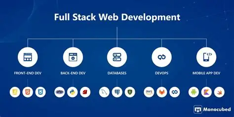

Por qué elegí este camino
Siempre me interesó la tecnología y la posibilidad de crear soluciones mediante programación. Por eso decidí empezar a formarme en Desarrollo de Software.
Mi nombre es Alejo Santiago Martin. Soy estudiante de Desarrollo de Software y actualmente estoy ampliando mis conocimientos en programación y desarrollo web.
Actualmente estudio Desarrollo de Software en la Universidad Nacional de San Martín y también estoy realizando un curso de desarrollo web en Coderhouse.
Siempre me interesó la tecnología y la posibilidad de crear soluciones mediante programación. Por eso decidí empezar a formarme en Desarrollo de Software.
Me interesa especialmente el desarrollo web, la programación y seguir aprendiendo nuevas tecnologías.

Mi objetivo es seguir formándome, desarrollar proyectos cada vez más completos y adquirir experiencia profesional en el área de tecnología.